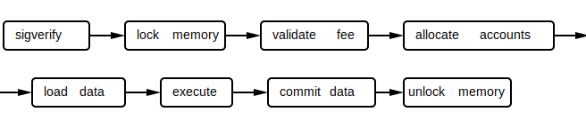

The Runtime
The runtime is a concurrent transaction processor. Transactions specify their data dependencies upfront and dynamic memory allocation is explicit. By separating program code from the state it operates on, the runtime is able to choreograph concurrent access. Transactions accessing only credit-only accounts are executed in parallel whereas transactions accessing writable accounts are serialized. The runtime interacts with the program through an entrypoint with a well-defined interface. The userdata stored in an account is an opaque type, an array of bytes. The program has full control over its contents.
The transaction structure specifies a list of public keys and signatures for those keys and a sequential list of instructions that will operate over the states associated with the account keys. For the transaction to be committed all the instructions must execute successfully; if any abort the whole transaction fails to commit.
Account Structure
Accounts maintain a token balance and program-specific memory.
Transaction Engine
The engine maps public keys to accounts and routes them to the program's entrypoint.
Execution
Transactions are batched and processed in a pipeline

At the execute stage, the loaded pages have no data dependencies, so all the programs can be executed in parallel.
The runtime enforces the following rules:
- Only the owner program may modify the contents of an account. This means that upon assignment userdata vector is guaranteed to be zero.
- Total balances on all the accounts is equal before and after execution of a transaction.
- After the transaction is executed, balances of credit-only accounts must be greater than or equal to the balances before the transaction.
- All instructions in the transaction executed atomically. If one fails, all account modifications are discarded.
Execution of the program involves mapping the program's public key to an entrypoint which takes a pointer to the transaction, and an array of loaded pages.
SystemProgram Interface
The interface is best described by the Instruction::userdata that the user
encodes.
CreateAccount- This allows the user to create and assign an account to a Program.Assign- allows the user to assign an existing account to a program.Move- moves tokens between accounts.Spawn- spawns a new program from an account.
Notes
- There is no dynamic memory allocation. Client's need to use
CreateAccountinstructions to create memory before passing it to another program. This instruction can be composed into a single transaction with the call to the program itself. - Runtime guarantees that when memory is assigned to the program it is zero initialized.
- Runtime guarantees that a program's code is the only thing that can modify memory that its assigned to
- Runtime guarantees that the program can only spend tokens that are in accounts that are assigned to it
- Runtime guarantees the balances belonging to accounts are balanced before and after the transaction
- Runtime guarantees that multiple instructions all executed successfully when a transaction is committed.